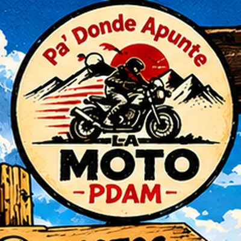
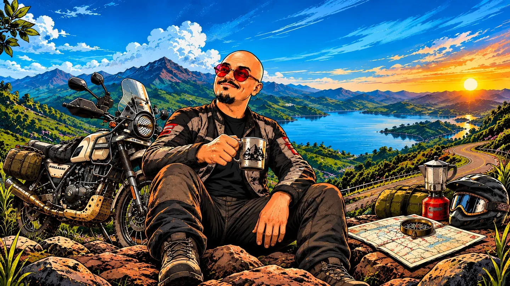
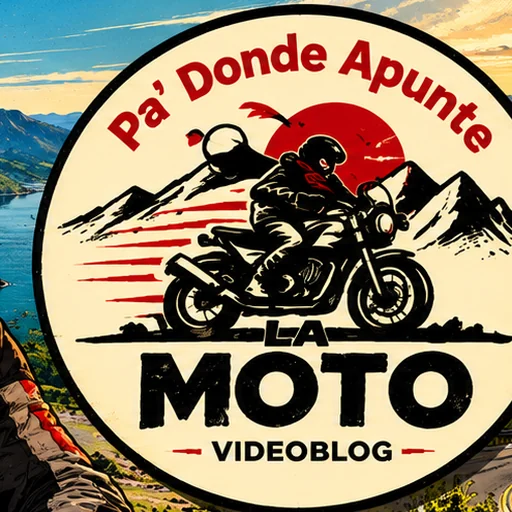

Comparar antes de enamorarse
Modelos, segmentos, fichas técnicas y experiencia real. Porque la foto del concesionario no paga la cuota.


MOTOCICLISMO · COLOMBIA · SIN LIBRETO
Pa' Donde Apunte la Moto
El canal para quienes aman las motos, pero no se tragan entero el cuento. Comparamos, probamos y hablamos de precios, garantías, equipos, viajes e historias reales, con humor y mirada de motociclista.
Conozca el canal ↓PA' DONDE APUNTE LA MOTO
Hablamos de lo que el motociclista compra, paga, compara, usa y vive. A veces la historia empieza con una garantía; otras, con una diferencia de 24 millones, un accesorio que promete cambiarle la vida o una carretera que se veía mucho más fácil en el mapa.
Una muestra de los temas que encontrará en PDAM. No todo es viaje: también hay preguntas, comparaciones y cuentas que vale la pena sacar antes de comprar.
 GARANTÍAS
GARANTÍAS PRECIOS Y MERCADO
PRECIOS Y MERCADO COMPARACIONES
COMPARACIONES EQUIPO Y TECNOLOGÍA
EQUIPO Y TECNOLOGÍA MOTOS DE AVENTURA
MOTOS DE AVENTURA RUTAS Y VIAJES
RUTAS Y VIAJESLa carretera también tiene su lugar. Pero antes de salir, durante el camino y cuando vuelve a casa, hay mucho más de qué hablar.
02 / LOS TEMAS
Modelos, segmentos, fichas técnicas y experiencia real. Porque la foto del concesionario no paga la cuota.
Precios en Colombia, diferencias entre mercados, costos y decisiones de compra. Saquemos la calculadora antes de sacar la tarjeta.
Garantías, problemas, mantenimientos y esas cosas que uno descubre cuando ya dejó la moto en el taller.
Pruebas, comparativos y comportamiento real. Sin hacerle venia a una ficha técnica ni al logo del tanque.
Cascos, accesorios, pantallas, cámaras y tecnología. Lo útil se nota; lo demás también ocupa espacio en la maleta.
Rutas, destinos, hospedajes, restaurantes y experiencias. Lo bonito, lo complicado y lo que no aparece en la foto.
Personajes, costumbres, conversaciones y situaciones de la vida motera. Con humor colombiano, opiniones y, cuando la parada lo permite, una arepa y un caldo de costilla.
03 / LA COMUNIDAD
PDAM se mueve entre YouTube, TikTok, Instagram y Facebook. Detrás de cada cifra hay gente que pregunta, comenta, compara motos y comparte sus propios cuentos.
Corte de datos: 10 de noviembre de 2026. YouTube y Facebook fueron consultados en Windsor.ai; Instagram y TikTok, según las cifras compartidas por PDAM.
04 / COLABORACIONES
Una marca, un concesionario, un taller, una tienda de accesorios, un restaurante, un alojamiento, un evento o un destino. Cuéntenos qué tiene y por qué podría interesarle a la comunidad de PDAM.
Podemos conocer el lugar o la propuesta y, si tiene sentido para el canal, incorporarla a nuestro contenido. La visita, la mención o una integración comercial se conversan con claridad antes de grabar.
Proponer una colaboración ↗05 / MEDIA KIT COMERCIAL
En nuestro dossier encontrará quiénes somos, de qué habla el canal, cómo participa la comunidad y qué tipo de colaboraciones tienen sentido para PDAM.

MEDIA KIT · 202606 / CONTACTO
Escríbanos y cuéntenos qué tiene en mente. Revisamos cada propuesta y conversamos si encaja con PDAM.